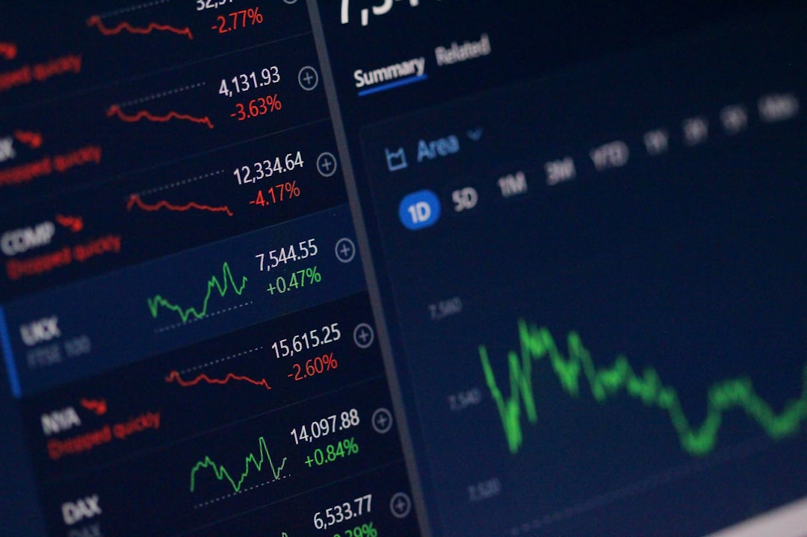

For borrowers comparing finance brokers adelaide options, the practical task is to match the loan purpose, evidence and broker specialisation before any application is started.
Finance Brokers Adelaide Explained
Adelaide Finance Broker describes an enquiry website for people who want to work with a licensed finance broker for their specific situation. Its listed categories include home loans, investment loans, car loans, commercial loans, business loans and equipment finance. That makes loan purpose the first filter, ahead of suburb, bank preference or headline rate.
A home buyer needs a different evidence pack from a business owner seeking equipment funding. An investor needs questions about rent, existing debt and structure. A vehicle buyer may need asset and use details before a lender comparison is meaningful. Ask what information is needed before options can be compared, and whether the enquiry belongs with a home loan, asset finance, commercial or business specialist.
- Home loan: ask what income, deposit, debt and property details are needed before discussing borrowing capacity.
- Investment loan: ask how rent, current loans and future plans affect the assessment.
- Business or commercial loan: ask which financial records, security details or asset information matter.
- Car or equipment finance: ask whether personal use, business use or mixed use changes the lender evidence required.
Who this guide suits
This guide suits Adelaide and South Australian borrowers who know they need finance but have not chosen the broker conversation to start. The source text says the service is serving all of Adelaide and South Australia, and its visible location links include Adelaide CBD, Adelaide Hills, Aldinga, Brighton, Burnside and Campbelltown. Those place names should guide context, not replace lending questions.
Use the local angle to sharpen the brief. If the finance relates to a property purchase, ask what valuation, contract or settlement documents may be needed. If the enquiry is for a business asset, ask what invoice, registration or business-use evidence will be required. If the matter is purely a home loan, the related home loan broker Adelaide guide is a narrower companion resource.
The source text is clear about role boundaries. Licensed finance brokers provide all credit assistance, and the site itself says it does not provide financial advice or credit assistance.
What to ask before applying
ASIC Moneysmart provides home loan guidance that points borrowers toward comparing interest rates, costs and repayments. In a broker discussion, that means asking for more than a product name. Ask which lenders are being considered, what assumptions sit behind the comparison, and what costs or conditions could change once documents are reviewed.
The source text describes the enquiry support as free and no obligation, and says brokers are paid by lenders. Borrowers should still ask how the broker is paid, whether the borrower pays any separate fee, and whether any lender options are unavailable. A broad lender panel is useful when the shortlist is explained in plain language.
Before consenting to an application, ask the broker to set out the loan amount being discussed, the evidence still outstanding, the likely next step and the main trade offs. Those trade offs may involve repayments, fees, rate type, redraw, offset, approval conditions or future refinancing flexibility. Keep the decision tied to your documents, not to a general rate conversation.
Questions for a stronger comparison
The source text says broker partners access 40+ lenders and names major banks including CBA, ANZ, Westpac, NAB and BankSA. A borrower does not need every lender name repeated. They need to know why a smaller set of options fits the purpose, evidence and application profile.
Useful questions include:
- Which lenders are being compared for this loan purpose, and why?
- What documents are missing before the comparison becomes reliable?
- What fees, lender charges or ongoing costs should be checked before signing?
- How would the recommended structure affect repayment flexibility or future refinancing?
- For business, commercial or equipment finance, what security, cash flow or asset details will the lender rely on?
These questions work across first home buyer, investor, refinancer and business borrower conversations without assuming that all borrowers need the same product.
Local context to raise with a broker
The source material says local brokers understand the Adelaide property market and serve areas from the CBD to the Hills. It does not give suburb-specific approval rules, grants, concessions, rates or settlement timeframes. Avoid treating locality as a shortcut to eligibility.
Turn Adelaide context into document questions. Ask whether the property, asset or business location changes the information a lender may request. Ask whether the lender will need valuation detail, contract evidence, asset invoices, business financials or proof of existing debts. For South Australian borrowers, the practical value is a broker who can translate the scenario into lender-ready information.
The sourced numbers, 50+ licensed brokers and access to 40+ lenders, should lead to clearer preparation: the right category, the right evidence and a broker who can explain the shortlist before an application is lodged.
- Define the purpose. Choose the loan category before asking a broker to compare options.
- Gather evidence. Prepare income, debt, property, asset or business documents that match the purpose.
- Ask about lenders. Request the lender shortlist and the reason each option is being considered.
- Check costs. Ask about loan fees, lender charges, repayment commitments and broker payment arrangements.
- Review the recommendation. Proceed only when the assumptions, documents and next step are clear.
| Borrower situation | Question to ask | Grounded support |
|---|---|---|
| Home loan | What income, deposit, debt and property documents are needed before comparison? | Home loans are listed as a service. |
| Investment property | How will rent, existing debt and loan structure be reviewed? | Investment loans are listed as a service. |
| Business or commercial finance | Which financial records, security details or asset information are needed? | Business loans, commercial loans and equipment finance are listed. |
| Car or equipment purchase | Does personal, business or mixed use change the lender evidence required? | Car loans and equipment finance are listed. |
This guide covers Adelaide borrower preparation for enquiries across home, investment, vehicle, business, commercial and equipment finance.